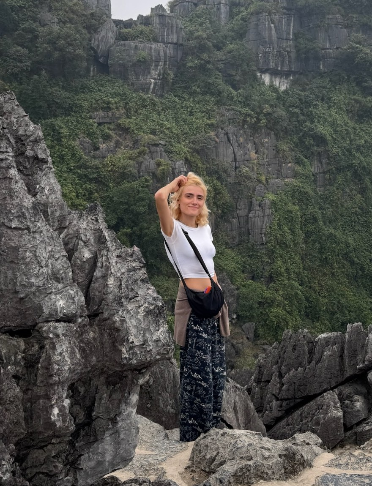

Product Designer
NovobancoLed Wealth Management product design and an award-winning client dashboard adopted by 400+ managers; audited and visually rebuilt an 800+ component design system to WCAG 2.1 AA accessibility requirements.

I jumped from graphic designer and art director to product and UX designer a couple of years ago, and I’m currently looking to make the leap back with all these new skills in accessibility and digital interfaces.
Brand identity
Editorial & print
Illustration
Data visualisation
Social media & art direction
Accessible communication
Portuguese (native)
English (C2)
Sewing & knitting
Drumming
Led Wealth Management product design and an award-winning client dashboard adopted by 400+ managers; audited and visually rebuilt an 800+ component design system to WCAG 2.1 AA accessibility requirements.
Visual identity, website design, publications and social media for 10+ clients within a multidisciplinary team of designers, photographers and copywriters.
Branding, web design, illustration and editorial design, for clients including Grupo Editorial Presença and EY.
Intensive 4-month programme in concept, art direction, copywriting and strategy.
User-centred design research, interaction design and front-end development.
Graphic and publication design and illustration. Included a year at Middlesex University, London, focusing on printing techniques, illustration and branding.